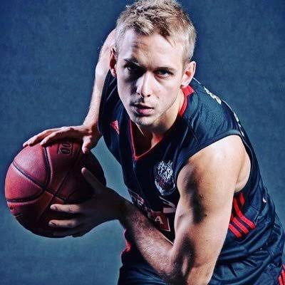
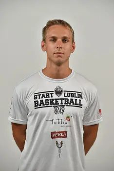
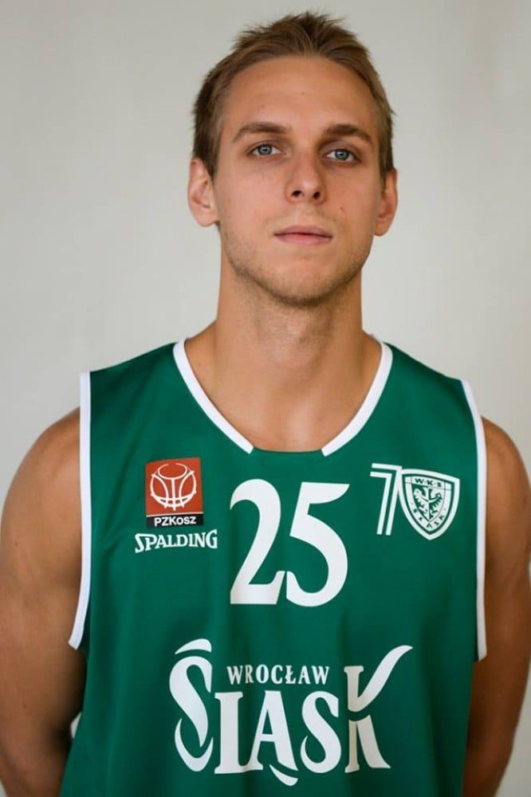
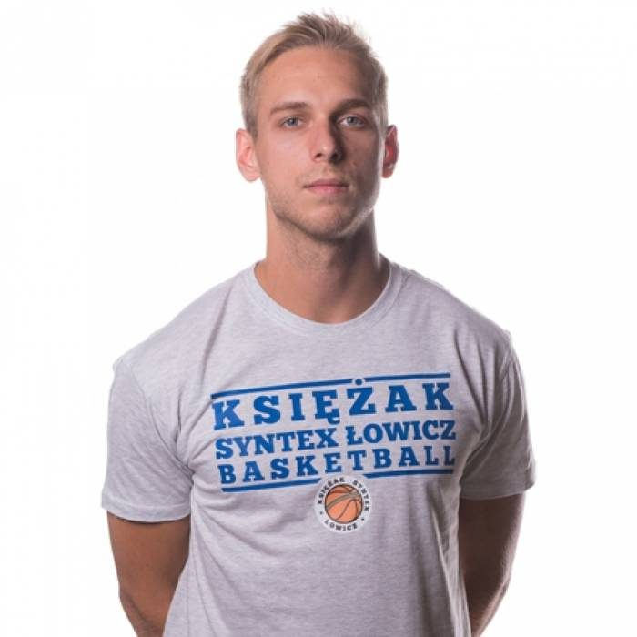

Born in Wrocław. Polish national basketball team member (U16–U20), studied at Wrocław University of Technology, UMCS, and Kozminski University, today building a career in Warsaw (Computershare).
2008
Start playing basketball — Polish champion and MVP of the youth (młodzik) tournament right away.
2010
Polish champion (kadet level) and tournament MVP, Poland national team at the U-16 European Championship (11th place).
2011
Polish champion (junior level), national team at the U-18 European Championship (6th place) and U-19 World Championship (7th place).
2013
Polish champion (senior junior level) and MVP, WKK Wrocław promoted to the 1st league. Start studying at Wrocław University of Technology.
2014
Poland U-20 national team at the European Championship Division A (9th place). Full athletic scholarship (~$50,000) to Canisius College (USA), NCAA Division I.
2015
Back to Poland — continue playing (Start Lublin) and study at UMCS in Lublin.


2017–2018
Play for Siarka Tarnobrzeg, Śląsk Wrocław and Księżak Łowicz, while studying at Kozminski University.


2019
End of playing career. Bachelor's degree defended.
2020
Start working at Knight Frank as a real estate analyst.
2021
Master's degree in Finance defended.
2022
CBRE, Business Analyst — supporting transactions worth over half a billion euros combined.
2023
Computershare, Vesting Specialist — global clients (SAP, Coca-Cola, DHL, Barclays, AstraZeneca).
2024 → today
Start learning Python and AI — a deliberate step toward a data & analytics career.